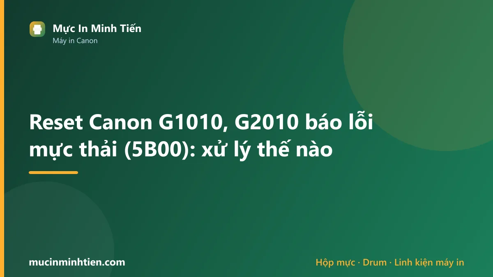
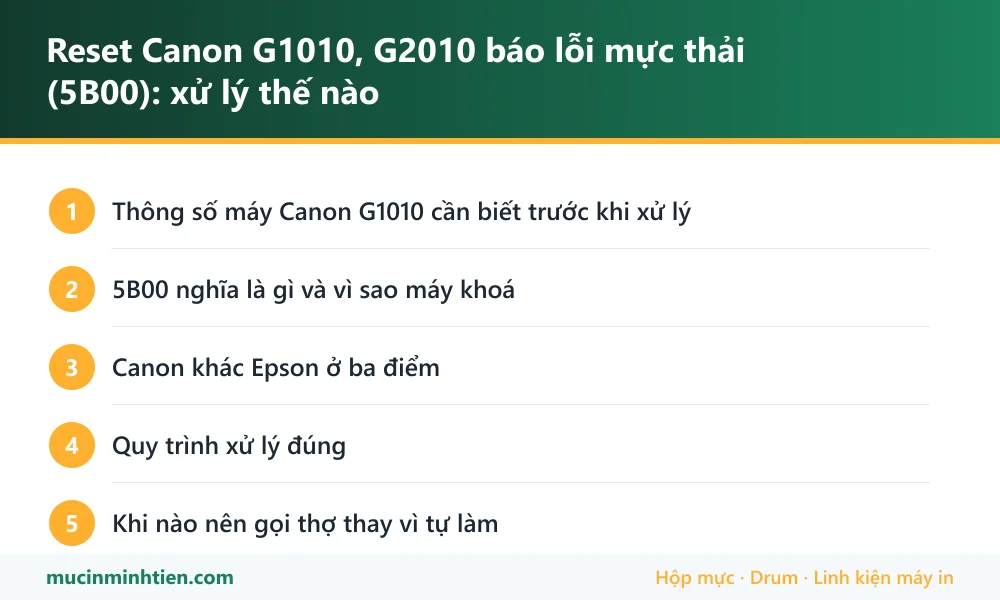

Reset Canon G1010, G2010 báo lỗi mực thải (5B00): xử lý thế nào

Canon dòng G báo lỗi 5B00 hoặc nháy đèn xen kẽ khi bộ đếm mực thải đầy — cùng cơ chế với Epson nhưng khác cách gọi và khác công cụ. Xử lý đúng gồm hai phần: dọn mực thải thật trong máy, rồi mới đưa bộ đếm về 0. Chỉ làm phần sau là vài tháng nữa mực tràn ra đế máy.
Thông số máy Canon G1010 cần biết trước khi xử lý
Biết đúng máy mình đang dùng loại nào giúp khỏi mua nhầm vật tư và khỏi làm theo hướng dẫn của dòng khác.
| Hạng mục | Chi tiết |
|---|---|
| Kiểu máy | In phun bình mực PIXMA G — G1010 chỉ in, G2010 có scan và copy, G3010 thêm Wi-Fi |
| Mực dùng | Canon GI-790 — bốn màu, dạng chai châm vào bình |
| Mã lỗi hay gặp | 5B00, đôi khi hiện P07 hoặc nháy đèn vàng xen kẽ đèn nguồn |
| Bộ đếm mực thải | Có, Canon gọi là ink absorber counter — khay thấm đặt trong thân máy |
| Công cụ xử lý | Khác hoàn toàn phần mềm của Epson; Canon có công cụ riêng dành cho kỹ thuật |
5B00 nghĩa là gì và vì sao máy khoá
Mỗi lần máy làm vệ sinh đầu phun, một lượng mực bị xả vào khay thấm trong thân máy. Máy đếm số lần đó. Đầy ngưỡng thì khoá lại và báo 5B00 — trên dòng G không có màn hình thì biểu hiện là đèn vàng nháy xen kẽ đèn nguồn, máy không nhận lệnh in.
Máy không hỏng. Nó đang báo đã tới hạn bảo dưỡng. Cách đọc mã lỗi Canon và các mã liên quan xem thêm ở bài lỗi 5B00 máy in Canon.
Canon khác Epson ở ba điểm
Nhiều người quen xử lý Epson rồi áp y nguyên sang Canon nên vướng. Ba khác biệt:
- Công cụ khác. Phần mềm dùng cho Epson không chạy được với Canon. Canon có công cụ dịch vụ riêng, và máy phải được đưa vào chế độ dịch vụ trước khi công cụ nhận.
- Khay thấm thay vì mút rời. Ở nhiều model dòng G, phần thấm mực thải nằm sâu trong thân máy chứ không phải tấm mút dễ rút ra như Epson — tháo tới đó cần kinh nghiệm, tháo sai dễ gãy ngàm vỏ.
- Mã lỗi rõ ràng hơn. Canon cho mã 5B00 cụ thể, trong khi Epson chỉ nháy đèn nên phải đoán nhiều hơn.
Vì điểm thứ hai, dòng G là nhóm bên mình khuyên nên để kỹ thuật viên làm hơn là tự mở máy — khác với Epson L1210 hay L3210 mà người dùng tự thay mút được.
Quy trình xử lý đúng
- Xác nhận đúng mã. 5B00 là mực thải. Các mã khác như kẹt giấy, hết mực, lỗi đầu phun thì xử lý hoàn toàn khác, reset không giải quyết được gì.
- Mở máy, kiểm tra khay thấm. Khay no mực thì vệ sinh hoặc thay; nhiều ca còn phải hút bớt mực đọng trong khoang.
- Cân nhắc dẫn ống mực thải ra bình ngoài nếu máy in khối lượng lớn — lần sau chỉ đổ bình.
- Đưa máy vào chế độ dịch vụ rồi reset bộ đếm bằng công cụ đúng cho dòng G.
- In trang kiểm tra xác nhận máy hoạt động bình thường và bản in không sọc.
Thứ tự này không đảo được: dọn mực thật trước, xoá số sau.
Khi nào nên gọi thợ thay vì tự làm
Với dòng G, tự làm hợp lý khi máy mới, khay thấm còn dễ tiếp cận và bạn đã từng tháo máy in. Ngược lại, nên gọi thợ nếu:
- Máy đã có vệt mực dưới gầm hoặc trên mặt bàn — nghĩa là mực đã tràn khỏi khay.
- Máy còn hạn bảo hành — can thiệp bằng công cụ ngoài có thể mất bảo hành, nên mang tới trung tâm hãng.
- Bạn không có kinh nghiệm tháo vỏ máy Canon — ngàm nhựa dòng này dễ gãy.
- Sau khi reset, bản in vẫn sọc hoặc mất màu, tức là còn bệnh đầu phun kèm theo.
Bảng tra: dấu hiệu nào ứng với nguyên nhân nào
| Dấu hiệu | Nguyên nhân | Cách xử lý | Chi phí |
|---|---|---|---|
| Báo 5B00, đèn vàng nháy xen kẽ, không in được | Bộ đếm mực thải đầy | Dọn khay thấm rồi reset bộ đếm | Kiểm tra rồi báo giá |
| Có vệt mực dưới gầm máy | Mực đã tràn khỏi khay thấm | Vệ sinh khoang, thay khay, kiểm tra bo mạch | Kiểm tra rồi báo giá |
| Reset xong bản in vẫn sọc | Đầu phun tắc, bệnh riêng | Vệ sinh đầu phun | từ 100.000 đ |
| Máy báo mã khác không phải 5B00 | Kẹt giấy, hết mực, lỗi cảm biến | Xử lý theo đúng mã, không reset | — |
| Reset xong vài tháng lại báo 5B00 | Chỉ xoá số mà chưa dọn mực thải | Mở máy dọn khay, cân nhắc dẫn ống ra bình ngoài | Kiểm tra rồi báo giá |
Vật tư cho Canon G1010 có sẵn tại kho 77 Bắc Hải, Phường Diên Hồng, TP.HCM — xem bảng giá 773 mã hoặc gọi 0986 704 260 kèm model máy.
Khi nào nên gọi kỹ thuật viên
- Máy đã có vệt mực dưới gầm hoặc trên mặt bàn
- Chưa từng tháo vỏ máy Canon — ngàm nhựa dòng G dễ gãy
- Máy còn hạn bảo hành, nên mang tới trung tâm hãng
- Reset xong bản in vẫn sọc hoặc mất màu
- Muốn dẫn ống mực thải ra bình ngoài cho lần sau đỡ phải tháo
Báo giá xử lý Canon G1010 tận nơi
| Hạng mục | Giá tham khảo |
|---|---|
| Vệ sinh khoang, xử lý khay mực thải | Kiểm tra rồi báo giá |
| Reset bộ đếm mực thải kèm bảo dưỡng | Kiểm tra rồi báo giá |
| Dẫn ống mực thải ra bình ngoài | Kiểm tra rồi báo giá |
| Vệ sinh đầu phun | từ 100.000 đ |
| Mực Canon GI-790 (mỗi màu) | Xem bảng giá vật tư |
Kỹ thuật viên kiểm tra và báo giá trước khi làm — xem cam kết ở dịch vụ sửa máy in tận nơi TP.HCM.
Cách phòng tránh tái phát
- In đều mỗi tuần để đầu phun không khô — máy nằm im lâu là phải vệ sinh nhiều, bộ đếm đầy nhanh.
- Không bấm vệ sinh đầu phun liên tục khi bản in chỉ hơi nhạt; in trang kiểm tra trước.
- Dùng mực đúng chuẩn cho dòng G, mực kém gây tắc và kéo theo nhiều lần vệ sinh.
- Máy in khối lượng lớn thì dẫn ống mực thải ra bình ngoài ngay từ lần bảo dưỡng đầu.
